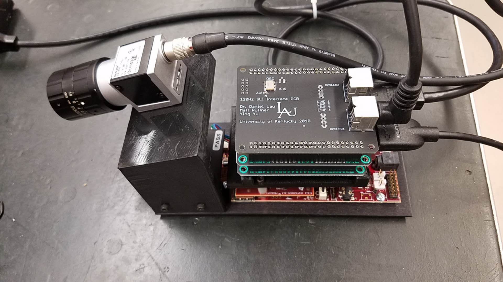
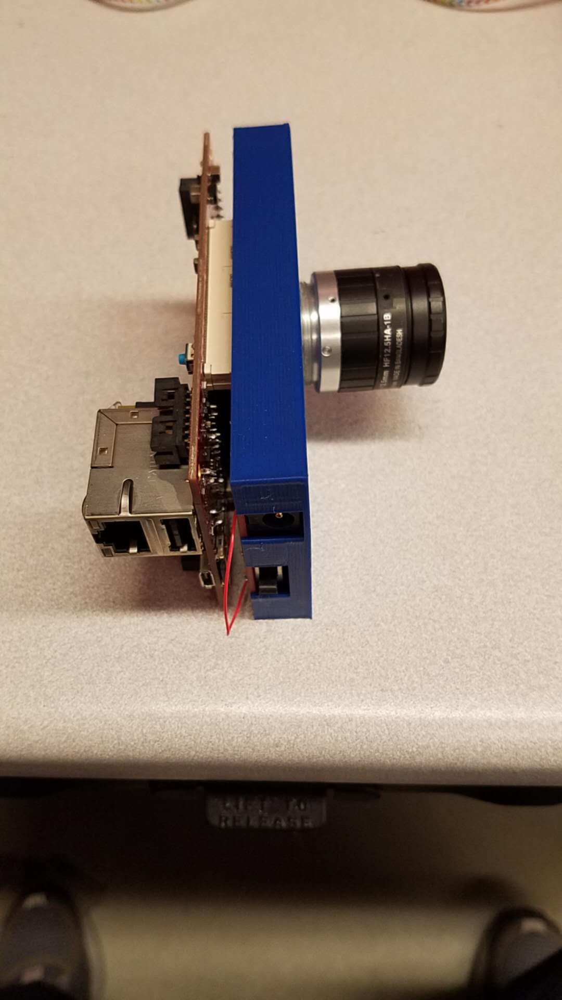
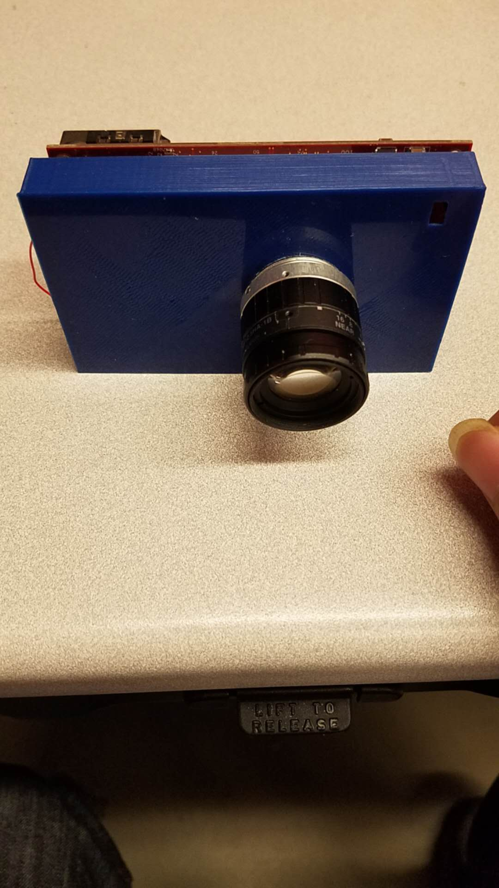

1. The 3D structured light scanner, it is built on a Mojo V3 FPGA board.
Projector: TI dlp projector
Camera: Basler

2. The camera we built that is based on Microzed board and the LUPA300 CMOS sensor


3. Sample images and video